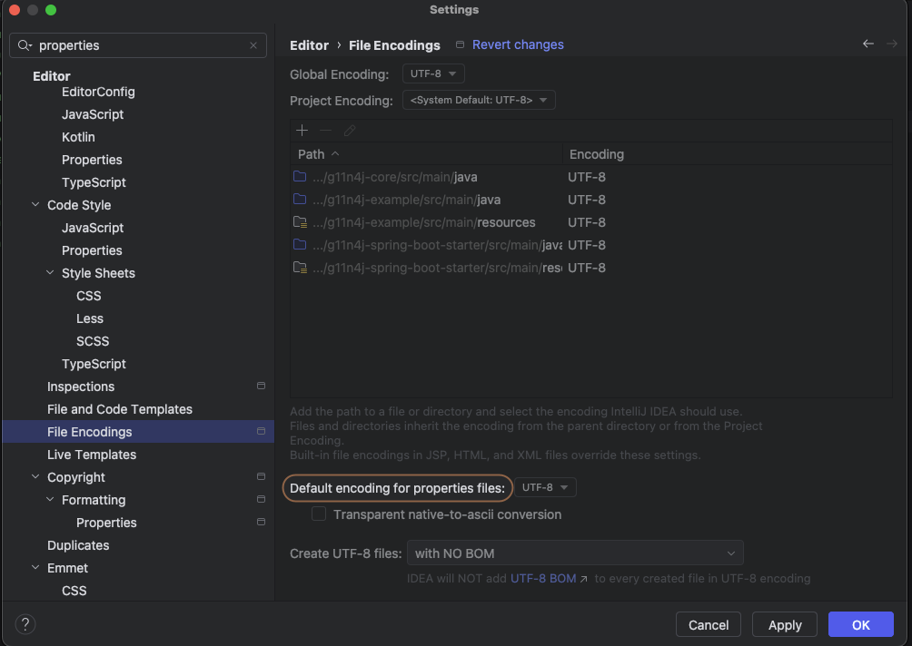

g11n4j - Globalization for Java
g11n4j is a lightweight internationalization library for Java and Spring Boot.
- Locale fallback chain:
en_US -> en -> default - ICU4J-based pluralization rules
- Named and indexed placeholders:
{name},{0} - Context-aware keys such as
gender.male/gender.female - Runtime message reload support
Modules
g11n4j-core- core Java libraryg11n4j-spring-boot-starter- Spring Boot 3.x starterg11n4j-spring-boot4-starter- Spring Boot 4.x starter
Requirements
- Java 21+
- Maven 3.9+
Supported Formats
YAML(.yml,.yaml)PROPERTIES(.properties)JSON(.json)GETTEXT(.po)XLIFF(.xlf,.xliff)
Core Usage (Plain Java)
Dependency:
<dependency>
<groupId>info.md7.g11n4j</groupId>
<artifactId>g11n4j-core</artifactId>
<version>1.0.0</version>
</dependency>Example:
import info.md7.g11n4j.core.i18n.MessageResolver;
import info.md7.g11n4j.core.source.YamlMessageSource;
import java.util.List;
import java.util.Locale;
var source = new YamlMessageSource(
"i18n-yaml",
"messages",
"_",
"yml",
Locale.ENGLISH,
List.of(Locale.ENGLISH, Locale.forLanguageTag("ru"), Locale.forLanguageTag("de")),
1000
);
var resolver = new MessageResolver(source);
String greeting = resolver.get("greeting", Locale.ENGLISH)
.withContext("gender", "male")
.render("fullName", "John Smith");
String notifications = resolver.getPlural("notification.message.count", 15, Locale.ENGLISH)
.render();Message Conventions
- Filename format:
${fileBaseName}_${locale}.${extension}(for examplemessages_en.yml) - Fallback order: region locale, then language locale, then default locale
- Context key pattern:
greeting.gender.male,greeting.gender.other,greeting._base
Plural categories:
| Category | Usage |
|---|---|
zero | Used in languages that distinguish zero |
one | Singular category |
two | Dual category in some languages |
few | Small-count category in some languages |
many | Large-count category in some languages |
other | Required fallback category |
notification:
message:
count:
one: "You have {count} new notification"
other: "You have {count} new notifications"Spring Boot Integration
Spring Boot 3.x dependency:
<dependency>
<groupId>info.md7.g11n4j</groupId>
<artifactId>g11n4j-spring-boot-starter</artifactId>
<version>1.0.0</version>
</dependency>Spring Boot 4.x dependency:
<dependency>
<groupId>info.md7.g11n4j</groupId>
<artifactId>g11n4j-spring-boot4-starter</artifactId>
<version>1.0.0</version>
</dependency>Configuration:
spring:
g11n:
enabled: true
type: YAML
base-directory: classpath:i18n-yaml
file-base-name: messages
file-extension: yml
locale-separator: _
default-locale: en
locales: [en, ru, de]
cache:
size: 2000
enable-statistics: true
validation:
enabled: true
fail-on-error: falseApplication usage:
import info.md7.g11n4j.core.i18n.MessageResolver;
import org.springframework.stereotype.Service;
import java.util.Locale;
@Service
public class UserMessageService {
private final MessageResolver messageResolver;
public UserMessageService(MessageResolver messageResolver) {
this.messageResolver = messageResolver;
}
public String welcome(String fullName, Locale locale) {
return messageResolver.get("greeting", locale)
.withContext("gender", "male")
.render("fullName", fullName);
}
}Spring Boot Configuration Parameters
Complete reference for all spring.g11n.* properties used by the starters.
| Property | Type | Default | Description |
|---|---|---|---|
spring.g11n.enabled |
boolean |
true |
Master switch for g11n4j auto-configuration. When false, message source, resolver, validation runner, web resolver, and actuator integration are not auto-configured. |
spring.g11n.type |
enum |
PROPERTIES |
Message source format. Allowed values: YAML, PROPERTIES, JSON, GETTEXT, XLIFF. |
spring.g11n.base-directory |
String |
i18n |
Base directory for translation files. Supports plain paths and classpath: prefix (for example classpath:i18n-yaml). |
spring.g11n.file-base-name |
String |
messages |
Filename base used before locale and extension. Example pattern: messages_en.yml. |
spring.g11n.file-extension |
String |
properties |
File extension for translation files. Must match selected source type (for example yml/yaml for YAML, po for GETTEXT, xlf/xliff for XLIFF). If type is not PROPERTIES and this value is left at default properties, starter auto-selects the first extension for that type. |
spring.g11n.locale-separator |
String |
_ |
Separator between file base name and locale code in filenames. Example: messages_en.properties. |
spring.g11n.default-locale |
Locale |
en |
Default locale used by fallback resolution when a specific locale key is not found. |
spring.g11n.locales |
List<Locale> |
[default-locale] |
Supported locales for loading and resolution. If omitted or empty, starter uses only spring.g11n.default-locale. |
spring.g11n.cache.size |
int |
1000 |
Maximum in-memory cache entries for resolved messages. Must be a positive number. |
spring.g11n.cache.enable-statistics |
boolean |
false |
Enables internal cache statistics collection for diagnostics. |
spring.g11n.validation.enabled |
boolean |
true |
Enables startup validation of message files across configured locales. |
spring.g11n.validation.fail-on-error |
boolean |
false |
When validation is enabled, controls startup behavior on validation failures. true fails application startup; false logs warnings and continues. |
Example with all parameters:
spring:
g11n:
enabled: true
type: YAML
base-directory: classpath:i18n-yaml
file-base-name: messages
file-extension: yml
locale-separator: _
default-locale: en
locales:
- en
- ru
- de
cache:
size: 2000
enable-statistics: true
validation:
enabled: true
fail-on-error: falseActuator Support
- Health indicator:
g11n - Reload endpoint id:
g11n-reload - Supports reloading all messages or a specific locale
Boot 3.x exposure example:
management.endpoints.web.exposure.include=health,g11n-reloadBoot 4.x exposure example:
management.endpoints.web.exposure.include=health,g11nreloadWeb Locale Resolution
With Web MVC present, a custom LocaleResolver is auto-configured. Resolution order:
?locale=...query parameterAccept-Languageheaderspring.g11n.default-locale
Properties UTF-8 Encoding
.properties translation files are read as UTF-8. Save them as UTF-8 in your editor or IDE.
IntelliJ IDEA path: Settings/Preferences -> Editor -> File Encodings
